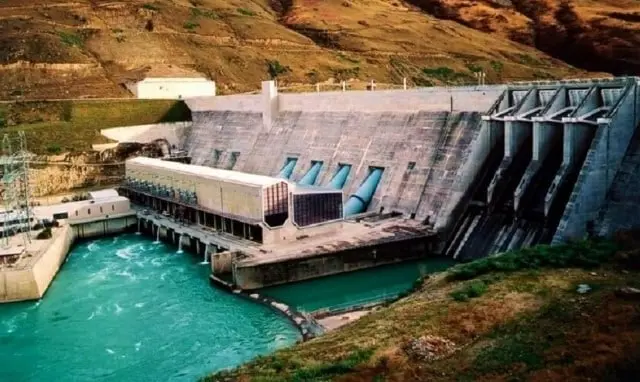
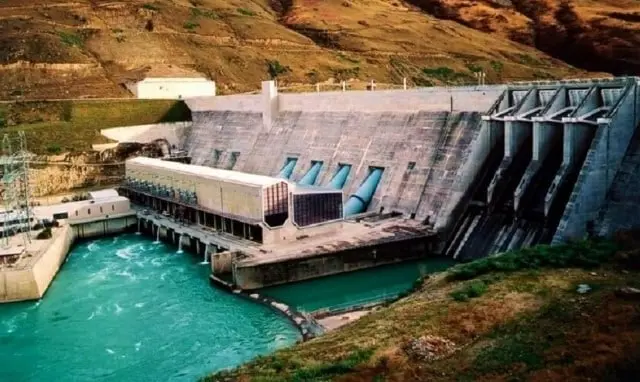

About
This project leverages AI and machine learning to optimize the efficiency and integrity of hydro power plants. The system provides real-time monitoring and anomaly detection, ensuring safe and efficient power generation. Our aim is to enhance predictive maintenance and overall system resilience.
Key features include anomaly detection to identify potential issues early, predictive maintenance to extend equipment lifespan, and a crack detection system using image processing for structural safety. By utilizing real-time data from sensors monitoring power output, water flow, and system integrity, the dashboard provides operators with a clear view of plant performance. The intuitive web-based interface with interactive elements ensures operators can make quick, informed decisions, ultimately enhancing efficiency, safety, and sustainability in renewable energy production.
Features
Crack Detection: This module focuses on identifying structural cracks within the power plant infrastructure. Using image processing and machine learning techniques, it detects and alerts operators about cracks, enabling timely maintenance to ensure structural integrity.
Mapping System: This module provides a detailed map of the power plant’s operational area, allowing for efficient monitoring and navigation. The system includes real-time data overlays to assist in tracking environmental factors and resource flow throughout the facility.
Surveillance System: This module enhances security and operational oversight. Equipped with cameras and AI for pattern recognition, the surveillance system monitors plant activity, detects anomalies, and assists in maintaining a safe working environment.
 
